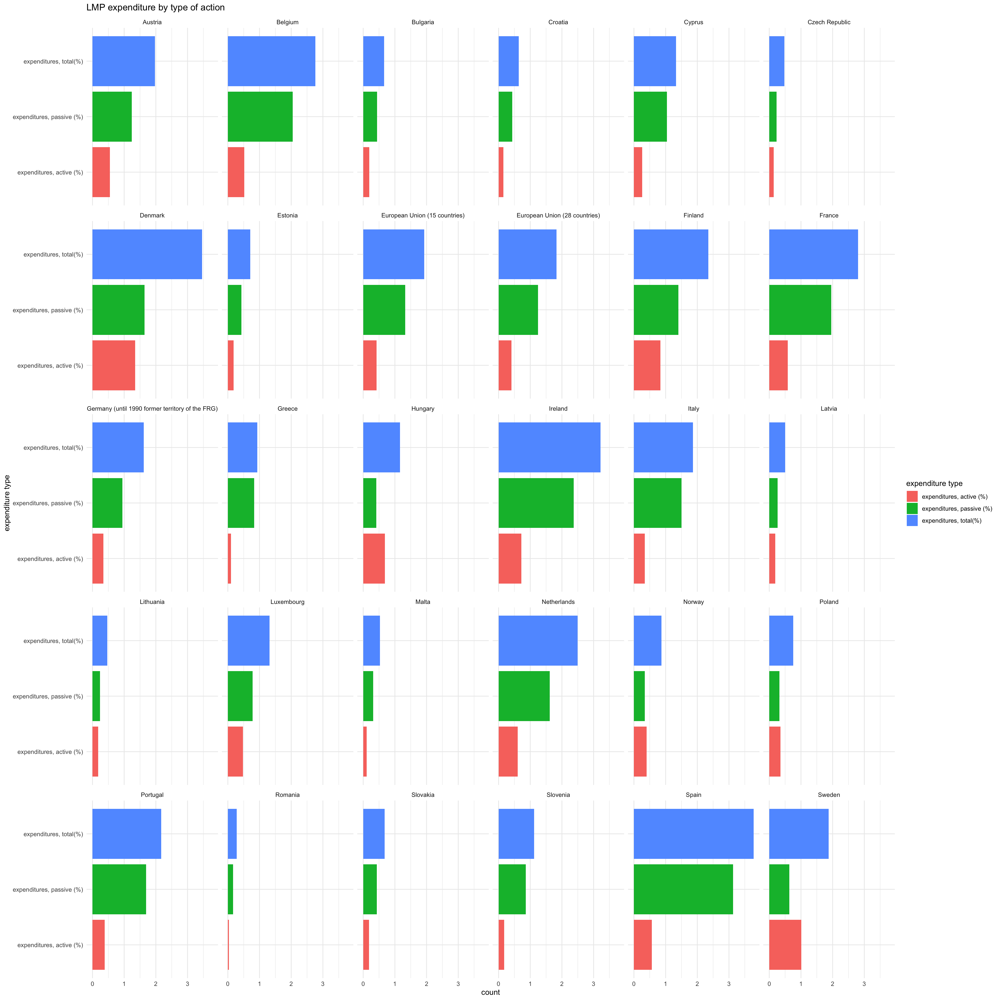

IOS Database of economic and social models
Eyayaw Teka Beze
2019-08-05
knitr::opts_chunk$set(echo = TRUE)
knitr::opts_chunk$set(message = FALSE, warning = FALSE)
knitr::opts_chunk$set(fig.width = 7)
knitr::opts_chunk$set(fig.height = 5)
knitr::opts_chunk$set(comment = '#>')
knitr::opts_chunk$set(cache = TRUE)
knitr::opts_chunk$set(collapse = TRUE)
knitr::opts_chunk$set(fig.pos = "h")
knitr::opts_chunk$set(results = "asis")
library(rmarkdown)
library(bookdown)
library(eurostat)
library(Rilostat)
library(WDI)
library(knitr)
library(haven)
library(readxl)
library(kableExtra)
library(fs)
library(DT)
library(plotly)
library(tidyverse)
#GDPperCapita_update <- read_excel("E:/Data IOS Socio-economic/StatPlanet_ios-regensburg/Datenbank/Macroeconomic/GDPperCapita_update.xlsx", skip = 1)
#countries <- GDPperCapita_update$`Country Code`
#countries <- countries[!is.na(countries)]
#countries[countries == "ROM"]="ROU"
countries <- c("ALB", "ARM", "AUT", "AZE", "BLR", "BEL", "BIH", "BGR", "HRV", "CYP", "CZE", "DNK","EST", "FIN", "FRA", "GEO", "DEU", "GRC", "HUN", "IRL", "ITA", "KAZ", "KGZ", "LVA","LTU", "LUX", "MKD", "MLT", "MDA", "MNE", "NLD", "POL" ,"PRT", "ROU", "RUS", "SRB","SVK", "SVN", "ESP", "SWE", "TJK", "TUR", "TKM", "UKR", "GBR", "UZB")
#new_cache <- WDIcache()
#write_rds(new_cache, "new_cache.rds")
new_cache <- read_rds('new_cache.rds')1 Macroeconomic
1.1 GDP PER CAPITA
- Indicator code :
NY.GDP.PCAP.PP.KD - Indicator name :
GDP per capita, PPP (constant 2011 international $) - Description:
GDP per capita based on purchasing power parity (PPP). PPP GDP is gross domestic product converted to international dollars using purchasing power parity rates. An international dollar has the same purchasing power over GDP as the U.S. dollar has in the United States. GDP at purchaser's prices is the sum of gross value added by all resident producers in the economy plus any product taxes and minus any subsidies not included in the value of the products. It is calculated without making deductions for depreciation of fabricated assets or for depletion and degradation of natural resources. Data are in constant 2011 international dollars. - source:
World Development Indicators, The World Bank
# gdp_per_capita <- WDI(country = countries, indicator = c(gdp_per_capita ="NY.GDP.PCAP.PP.KD"), start = 1995, end = 2018, cache = new_cache, extra = F)
#
# attr(gdp_per_capita$gdp_per_capita, "label")=NULL
# gdp_per_capita %>% write_csv('macroeconomic/gdp_per_capita.csv')
gdp_per_capita <- read_csv('macroeconomic/gdp_per_capita.csv', trim_ws = T, col_types = cols(year = col_character()))
kable(head(filter(gdp_per_capita, year == 2016)), caption = "Glimpse of GDP per capita", align = 'c', row.names = F, format.args = list(big.marks = ".", decimal.marks = ",")) %>% kable_styling(latex_options =c("scale_down", "hold_position"))| iso2c | country | gdp_per_capita | year |
|---|---|---|---|
| AL | Albania | 11356.719 | 2016 |
| AM | Armenia | 8158.635 | 2016 |
| AT | Austria | 44670.655 | 2016 |
| AZ | Azerbaijan | 16131.972 | 2016 |
| BE | Belgium | 42214.025 | 2016 |
| BG | Bulgaria | 17792.684 | 2016 |
1.2 GDP GROWTH
- indicator code:
NY.GDP.MKTP.KD.ZG - indicator name:
GDP growth (annual %) - Description:
Annual percentage growth rate of GDP at market prices based on constant local currency. Aggregates are based on constant 2010 U.S. dollars. GDP is the sum of gross value added by all resident producers in the economy plus any product taxes and minus any subsidies not included in the value of the products. It is calculated without making deductions for depreciation of fabricated assets or for depletion and degradation of natural resources. - source:
World Development Indicators, The World Bank
# gdp_growth <- WDI(country = countries, indicator = c(gdp_growth ="NY.GDP.MKTP.KD.ZG"), start = 1995, end = 2018, cache = new_cache, extra = F)
# attr(gdp_growth$gdp_growth, "label")=NULL
# gdp_growth %>% write_csv('macroeconomic/gdp_growth.csv')
gdp_growth <- read_csv('macroeconomic/gdp_growth.csv', trim_ws = T, col_types = cols(year = col_character()))
kable(head(filter(gdp_growth, year==2016)), caption = "Glimpse of gdp growth", digits = 3, format.args = list(decimal.mark = ",", big.mark = ".", digits = 2), row.names = F, align = 'c') %>% kable_styling(latex_options =c("scale_down", "hold_position"))| iso2c | country | gdp_growth | year |
|---|---|---|---|
| AL | Albania | 3,4 | 2016 |
| AM | Armenia | 0,2 | 2016 |
| AT | Austria | 2,0 | 2016 |
| AZ | Azerbaijan | -3,1 | 2016 |
| BE | Belgium | 1,5 | 2016 |
| BG | Bulgaria | 3,9 | 2016 |
1.3 HUMAN DEVELOPMENT INDEX (HDI)
Downloaded manually from UNDP
- Indicator name:
Human Development Index (HDI) - Dimension:
Human Development Index (HDI) - Definition: see this

Figure: HDI components
- Source:
UNITED NATIONS DEVELOPMENT PROGRAMME:Human Development Reports
# hdi<- read_csv("Human Development Index (HDI).csv", skip = 1, na = "..", trim_ws = T)
# hdi <- hdi%>% select(-contains("X"))
# # distinct(gdp_growth["country"]) %>% dplyr::anti_join(hdi["Country"], by = c("country"="Country"))
#
# # the names of the countries in hdi data is :
# # c("Czechia", "Kyrgyzstan", "Moldova (Republic of)", "The former Yugoslav Republic of Macedonia", "Slovakia")
#
# # which mean
# # c(`Czech Republic`="Czechia", `Kyrgyz Republic`="Kyrgyzstan", `Moldova`="Moldova (Republic of)", `North Macedonia`="The former Yugoslav Republic of Macedonia",`Slovak Republic`= "Slovakia")
#
# hdi[hdi$Country %in% c("Czechia", "Kyrgyzstan", "Moldova (Republic of)", "The former Yugoslav Republic of Macedonia", "Slovakia"),"Country"] = c("Czech Republic", "Kyrgyz Republic", "Moldova", "North Macedonia","Slovak Republic")
#
# hdi <- hdi[hdi$Country %in% distinct(gdp_growth["country"])$country,]
# names(hdi)[1:2]=c("hdi_rank_2017", "country")
# hdi <- gather(hdi, 3:30, key = "year", value = "hdi") %>% select(hdi_rank_2017, country, hdi, year)
# write_csv(hdi, "macroeconomic/hdi.csv")
hdi <- read_csv("macroeconomic/hdi.csv", trim_ws = T, col_types = cols(year = col_character()))
kable(head(subset(hdi, year == 2016)), caption = "Glimpse of Human Development Index(2017)", format.args = list(big.marks = ".", decimal.marks = ",", digits = 2))%>% kable_styling(latex_options =c("scale_down", "hold_position"))| hdi_rank_2017 | country | hdi | year |
|---|---|---|---|
| 68 | Albania | 0.78 | 2016 |
| 83 | Armenia | 0.75 | 2016 |
| 20 | Austria | 0.91 | 2016 |
| 80 | Azerbaijan | 0.76 | 2016 |
| 53 | Belarus | 0.81 | 2016 |
| 17 | Belgium | 0.92 | 2016 |
1.4 Inflation Rate
- indicator code:
FP.CPI.TOTL.ZG - indicator name:
Inflation, consumer prices (annual %) - Description:
Inflation as measured by the consumer price index reflects the annual percentage change in the cost to the average consumer of acquiring a basket of goods and services that may be fixed or changed at specified intervals, such as yearly. The Laspeyres formula is generally used. - source:
World Development Indicators, The World Bank
# inflation <- WDI(country = countries, indicator = c(inflation_rate = "FP.CPI.TOTL.ZG"), start = 1995, end = 2018, cache = new_cache, extra = F)
#
# attr(inflation$inflation_rate, "label")=NULL
# inflation %>% write_csv('macroeconomic/inflation.csv')
inflation <- read_csv('macroeconomic/inflation.csv', trim_ws = T, col_types = cols(year = col_character()))
subset(inflation, year == 2016) %>% head() %>% kable(caption = 'Glimpse of inflation rate', format.args = list(big.marks = ".", decimal.marks = ",", digits = 2)) %>% kable_styling(latex_options =c("scale_down", "hold_position"))| iso2c | country | inflation_rate | year |
|---|---|---|---|
| AL | Albania | 1.28 | 2016 |
| AM | Armenia | -1.40 | 2016 |
| AT | Austria | 0.89 | 2016 |
| AZ | Azerbaijan | 12.45 | 2016 |
| BE | Belgium | 1.97 | 2016 |
| BG | Bulgaria | -0.80 | 2016 |
1.5 Infant mortality rate
- indicator code:
SP.DYN.IMRT.IN - indicator name:
Mortality rate, infant (per 1,000 live births) - Description:
Infant mortality rate is the number of infants dying before reaching one year of age, per 1,000 live births in a given year. - source:
World Development Indicators, The World Bank
# infant_mortality <- WDI(country = countries, indicator = c(infant_mortality_rate = "SP.DYN.IMRT.IN"), start = 1995, end = 2018, cache = new_cache, extra = F)
#
# attr(infant_mortality$infant_mortality_rate, "label")=NULL
# infant_mortality %>% write_csv('macroeconomic/infant_mortality.csv')
infant_mortality <- read_csv('macroeconomic/infant_mortality.csv', trim_ws = T, col_types = cols(year = col_character()))
subset(infant_mortality, year == 2016) %>% head() %>% kable(caption = 'Glimpse of infant mortality rate', format.args = list(big.marks = ".", decimal.marks = ",", digits = 2)) %>% kable_styling(latex_options =c("scale_down", "hold_position"))| iso2c | country | infant_mortality_rate | year |
|---|---|---|---|
| AL | Albania | 8.1 | 2016 |
| AM | Armenia | 11.9 | 2016 |
| AT | Austria | 3.0 | 2016 |
| AZ | Azerbaijan | 21.9 | 2016 |
| BE | Belgium | 3.1 | 2016 |
| BG | Bulgaria | 6.7 | 2016 |
1.6 (Youth) Literacy rate
- indicator code:
SE.ADT.1524.LT.ZS - indicator name:
Literacy rate, youth total (% of people ages 15-24) - Description:
Youth literacy rate is the percentage of people ages 15-24 who can both read and write with understanding a short simple statement about their everyday life. - source:
World Development Indicators, The World Bank
# literacy_rate <- WDI(country = countries, indicator = c(literacy_rate = "SE.ADT.1524.LT.ZS"), start = 1995, end = 2018, cache = new_cache, extra = F)
#
# attr(literacy_rate$literacy_rate, "label")=NULL
# literacy_rate %>% write_csv('macroeconomic/literacy_rate.csv')
literacy_rate <- read_csv('macroeconomic/literacy_rate.csv', trim_ws = T, col_types = cols(year = col_character()))
subset(literacy_rate, year == 2016) %>% head() %>% kable(caption = 'Glimpse of youth literacy rate', format.args = list(big.marks = ".", decimal.marks = ",", digits = 2)) %>% kable_styling(latex_options =c("scale_down", "hold_position"))| iso2c | country | literacy_rate | year |
|---|---|---|---|
| AL | Albania | NA | 2016 |
| AM | Armenia | NA | 2016 |
| AT | Austria | NA | 2016 |
| AZ | Azerbaijan | 100 | 2016 |
| BE | Belgium | NA | 2016 |
| BG | Bulgaria | NA | 2016 |
2 Population
# countries <- c("ALB", "ARM", "AUT", "AZE", "BLR", "BEL", "BIH", "BGR", "HRV", "CYP", "CZE", "DNK","EST", "FIN", "FRA", "GEO", "DEU", "GRC", "HUN", "IRL", "ITA", "KAZ", "KGZ", "LVA","LTU", "LUX", "MKD", "MLT", "MDA", "MNE", "NLD", "POL" ,"PRT", "ROU", "RUS", "SRB","SVK", "SVN", "ESP", "SWE", "TJK", "TUR", "TKM", "UKR", "GBR", "UZB")
population_indicators = c(population_total = "SP.POP.TOTL", population_growth ="SP.POP.GROW", young_dependency_ratio = "SP.POP.DPND.YG", old_dependency_ratio = "SP.POP.DPND.OL", population_density = "EN.POP.DNST", net_migration = "SM.POP.NETM")
#
# population <- map(population_indicators, .f = ~WDI(start = 1995, end = 2018, extra = F, indicator = .x, country = c("ALB", "ARM", "AUT", "AZE", "BLR", "BEL", "BIH", "BGR", "HRV", "CYP", "CZE", "DNK","EST", "FIN", "FRA", "GEO", "DEU", "GRC", "HUN", "IRL", "ITA", "KAZ", "KGZ", "LVA","LTU", "LUX", "MKD", "MLT", "MDA", "MNE", "NLD", "POL" ,"PRT", "ROU", "RUS", "SRB","SVK", "SVN", "ESP", "SWE", "TJK", "TUR", "TKM", "UKR", "GBR", "UZB"), cache = new_cache))
#
# for(i in seq_along(population)){names(population[[i]])[[3]] <- names(population)[[i]]}
#
#
population_indicators_detail = as_tibble(new_cache$series[new_cache$series[,"indicator"] %in% population_indicators, 1:3])
#
population_indicators_detail$var_names = c("population_density", "net_migration", "old_dependency_ratio", "young_dependency_ratio", "population_growth", "population_total")
# walk2(.x = population, .f = write_csv, .y = paste0("population/", names(population), ".csv"))
# population_glimpse = map(.x = population, ~filter(.x, year == 2016)) %>%
# map(., `[`, c(1:7)) %>% map(head) %>% walk(~kable(.x, caption = paste(names(.x)), format.args = list(big.marks = ".", decimal.marks = ",")))
# write_rds(population, "population/population.rds")
population <- read_rds("population/population.rds")2.1 Population total
indicator code:
SP.POP.TOTLindicator name:
Population, totalDescription:
Total population is based on the de facto definition of population, which counts all residents regardless of legal status or citizenship. The values shown are midyear estimates.
population_total <- read_csv("population/population_total.csv", trim_ws = T, col_types = cols(year = col_character()))
subset(population_total, year == 2016) %>% head() %>% kable(caption = 'Glimpse of population, total', format.args = list(big.marks = ".", decimal.marks = ",", digits = 2)) %>% kable_styling(latex_options =c("scale_down", "hold_position"))| iso2c | country | population_total | year |
|---|---|---|---|
| AL | Albania | 2.9e+06 | 2016 |
| AM | Armenia | 2.9e+06 | 2016 |
| AT | Austria | 8.7e+06 | 2016 |
| AZ | Azerbaijan | 9.8e+06 | 2016 |
| BE | Belgium | 1.1e+07 | 2016 |
| BG | Bulgaria | 7.1e+06 | 2016 |
2.2 Population growth
indicator code:
SP.POP.GROWindicator name:
Population growth (annual %)Description:
Annual population growth rate for year t is the exponential rate of growth of midyear population from year t-1 to t, expressed as a percentage . Population is based on the de facto definition of population, which counts all residents regardless of legal status or citizenship.
population_growth <- read_csv("population/population_growth.csv", trim_ws = T, col_types = cols(year = col_character()))
subset(population_growth, year == 2016) %>% head() %>% kable(caption = 'Glimpse of population growth', format.args = list(big.marks = ".", decimal.marks = ",", digits = 2)) %>% kable_styling(latex_options =c("scale_down", "hold_position"))| iso2c | country | population_growth | year |
|---|---|---|---|
| AL | Albania | -0.16 | 2016 |
| AM | Armenia | 0.36 | 2016 |
| AT | Austria | 1.08 | 2016 |
| AZ | Azerbaijan | 1.12 | 2016 |
| BE | Belgium | 0.51 | 2016 |
| BG | Bulgaria | -0.70 | 2016 |
2.3 Age dependency ratio, young
indicator code:
SP.POP.DPND.YGindicator name:
Age dependency ratio, young (% of working-age population)Description:
Age dependency ratio, young, is the ratio of younger dependents--people younger than 15--to the working-age population--those ages 15-64. Data are shown as the proportion of dependents per 100 working-age population.
young_dependency_ratio <- read_csv("population/young_dependency_ratio.csv", trim_ws = T, col_types = cols(year = col_character()))
subset(young_dependency_ratio, year == 2016) %>% head() %>% kable(caption = 'Glimpse of dependency ratio, young', format.args = list(big.marks = ".", decimal.marks = ",", digits = 2)) %>% kable_styling(latex_options =c("scale_down", "hold_position"))| iso2c | country | young_dependency_ratio | year |
|---|---|---|---|
| AL | Albania | 26 | 2016 |
| AM | Armenia | 29 | 2016 |
| AT | Austria | 21 | 2016 |
| AZ | Azerbaijan | 33 | 2016 |
| BE | Belgium | 26 | 2016 |
| BG | Bulgaria | 22 | 2016 |
2.4 Age dependency ratio, old
indicator code:
SP.POP.DPND.OLindicator name:
Age dependency ratio, old (% of working-age population)Description:
Age dependency ratio, old, is the ratio of older dependents--people older than 64--to the working-age population--those ages 15-64. Data are shown as the proportion of dependents per 100 working-age population.
old_dependency_ratio <- read_csv("population/old_dependency_ratio.csv", trim_ws = T, col_types = cols(year = col_character()))
subset(old_dependency_ratio, year == 2016) %>% head() %>% kable(caption = 'Glimpse of dependency ratio, young', format.args = list(big.marks = ".", decimal.marks = ",", digits = 2)) %>% kable_styling(latex_options =c("scale_down", "hold_position"))| iso2c | country | old_dependency_ratio | year |
|---|---|---|---|
| AL | Albania | 18.5 | 2016 |
| AM | Armenia | 16.0 | 2016 |
| AT | Austria | 28.5 | 2016 |
| AZ | Azerbaijan | 8.2 | 2016 |
| BE | Belgium | 28.4 | 2016 |
| BG | Bulgaria | 31.3 | 2016 |
2.5 Population density
- indicator code:
EN.POP.DNST - indicator name:
Population density (people per sq. km of land area) - Description:
Population density is midyear population divided by land area in square kilometers. Population is based on the de facto definition of population, which counts all residents regardless of legal status or citizenship--except for refugees not permanently settled in the country of asylum, who are generally considered part of the population of their country of origin. Land area is a country's total area, excluding area under inland water bodies, national claims to continental shelf, and exclusive economic zones. In most cases the definition of inland water bodies includes major rivers and lakes. - source:
World Development Indicators, The World Bank
population_density <- read_csv("population/population_density.csv", trim_ws = T, col_types = cols(year = col_character()))
subset(population_density, year == 2016) %>% head() %>% kable(caption = 'Glimpse of population density', format.args = list(big.marks = ".", decimal.marks = ",", digits = 2)) %>% kable_styling(latex_options =c("scale_down", "hold_position"))| iso2c | country | population_density | year |
|---|---|---|---|
| AL | Albania | 105 | 2016 |
| AM | Armenia | 103 | 2016 |
| AT | Austria | 106 | 2016 |
| AZ | Azerbaijan | 118 | 2016 |
| BE | Belgium | 374 | 2016 |
| BG | Bulgaria | 66 | 2016 |
2.6 Net migration
indicator code:
SM.POP.NETMindicator name:
Net migrationDescription:
Net migration is the net total of migrants during the period, that is, the total number of immigrants less the annual number of emigrants, including both citizens and noncitizens. Data are five-year estimates.
net_migration <- read_csv("population/net_migration.csv", trim_ws = T, col_types = cols(year = col_character()))
subset(net_migration, year == 2016) %>% head() %>% kable(caption = 'Glimpse of net migration', format.args = list(big.marks = ".", decimal.marks = ",", digits = 2)) %>% kable_styling(latex_options =c("scale_down", "hold_position"))| iso2c | country | net_migration | year |
|---|---|---|---|
| AL | Albania | NA | 2016 |
| AM | Armenia | NA | 2016 |
| AT | Austria | NA | 2016 |
| AZ | Azerbaijan | NA | 2016 |
| BE | Belgium | NA | 2016 |
| BG | Bulgaria | NA | 2016 |
2.7 Immigrants
Manually downloaded from SourceUNICEF_TransMonEE_2018
- indicator name:
Number of immigrants - Number - Source: SourceUNICEF_TransMonEE_2018
under topic =
population
# immigrants <- readxl::read_excel("population/migration/immigrants.xls")
#
# immigrants <- rename(immigrants, time_period = "Time Period", country = "Area", iso3 = "Area ID", immigrants = "Data Value") %>% select(iso3, country, immigrants, year, time_period)
#
# write_csv(immigrants, "population/immigrants.csv")
immigrants <- read_csv("population/immigrants.csv", trim_ws = T, col_types = cols( year = col_character()))
subset(immigrants[1:4], year == 2016) %>% head() %>% kable(caption = 'Glimpse of immigrants', format.args = list(big.marks = ".", decimal.marks = ",", digits = 2)) %>% kable_styling(latex_options =c("scale_down", "hold_position"))| iso3 | country | immigrants | year |
|---|---|---|---|
| AZE | Azerbaijan | 3233 | 2016 |
| GEO | Georgia | 90228 | 2016 |
| KAZ | Kazakhstan | 13755 | 2016 |
| KGZ | Kyrgyzstan | 3160 | 2016 |
| TJK | Tajikistan | 455 | 2016 |
| UZB | Uzbekistan | 1821 | 2016 |
2.8 Emigrants
Manually downloaded from SourceUNICEF_TransMonEE_2018
- indicator name:
Number of emigrants - Number - Source: SourceUNICEF_TransMonEE_2018
under topic =
population
# emigrants <- readxl::read_excel("population/migration/emigrants.xls")
#
# emigrants <- rename(emigrants, time_period = "Time Period", country = "Area", iso3 = "Area ID", emigrants = "Data Value") %>% select(iso3, country, emigrants, year, time_period)
#
# write_csv(emigrants, "population/emigrants.csv")
emigrants <- read_csv("population/emigrants.csv", trim_ws = T, col_types = cols(year = col_character()))
subset(emigrants[1:4], year == 2016) %>% head() %>% kable(caption = 'Glimpse of emigrants', format.args = list(big.marks = ".", decimal.marks = ",", digits = 2)) %>% kable_styling(latex_options =c("scale_down", "hold_position"))| iso3 | country | emigrants | year |
|---|---|---|---|
| AZE | Azerbaijan | 1711 | 2016 |
| GEO | Georgia | 98288 | 2016 |
| KAZ | Kazakhstan | 34900 | 2016 |
| KGZ | Kyrgyzstan | 7125 | 2016 |
| TJK | Tajikistan | 2757 | 2016 |
| UZB | Uzbekistan | 28069 | 2016 |
3 Employment
3.1 Employment to population ratio
- indicator code:
EMP_2WAP_NOC_RT- indicator name:
Employment-to-population ratio -- ILO modelled estimates, November 2018 (%) - description: The employment-to-population ratio is defined as the proportion of a country’s working-age population that is employed. This indicator is part of the ILO Estimates and Projections series, analysed in the ILO’s World Employment and Social Outlook reports. For more information, refer to the indicator description and the ILO estimates and projections methodological note. Data are also available in Stata format via the bulk download facility.
- source: ILO, Key Indicators of the Labour Market (KILM)
- indicator name:
options(ilostat_cache_dir = "ilostat/ilostat_cache")
countries <- c("ALB", "ARM", "AUT", "AZE", "BLR", "BEL", "BIH", "BGR", "HRV", "CYP", "CZE", "DNK","EST", "FIN", "FRA", "GEO", "DEU", "GRC", "HUN", "IRL", "ITA", "KAZ", "KGZ", "LVA","LTU", "LUX", "MKD", "MLT", "MDA", "MNE", "NLD", "POL" ,"PRT", "ROU", "RUS", "SRB","SVK", "SVN", "ESP", "SWE", "TJK", "TUR", "TKM", "UKR", "GBR", "UZB")
# employment_population_ratio <- get_ilostat(id = "EMP_2WAP_NOC_RT_A", type = "both", time_format = "num", filters = list(ref_area = countries, time = 1995:2018))
#
# employment_population_ratio <- employment_population_ratio %>% select(iso3 = ref_area, country = ref_area.label, emp_pop_ratio = obs_value, year = time, indicator, indicator.label, source.label) %>% arrange(country, year)
#
# write_csv(employment_population_ratio,"employment/employment_population_ratio.csv")
employment_population_ratio <- read_csv("employment/employment_population_ratio.csv", trim_ws = T, col_types = cols(year = col_character()))
subset(employment_population_ratio[1:4], year == 2016) %>% head() %>% kable(caption = 'Glimpse of employment population ratio', format.args = list(big.marks = ".", decimal.marks = ",", digits = 2)) %>% kable_styling(latex_options =c("scale_down", "hold_position"))| iso3 | country | emp_pop_ratio | year |
|---|---|---|---|
| ALB | Albania | 48 | 2016 |
| ARM | Armenia | 48 | 2016 |
| AUT | Austria | 57 | 2016 |
| AZE | Azerbaijan | 63 | 2016 |
| BLR | Belarus | 61 | 2016 |
| BEL | Belgium | 49 | 2016 |
3.2 Unemployment rate
- indicator code:
UNE_DEAP_NOC_RTindicator name:
Unemployment rate (%)Description: The unemployment rate conveys the number of persons who are unemployed as a percent of the labour force (i.e., the employed plus the unemployed). The unemployed comprise all persons of working age who were: a) without work during the reference period, i.e. were not in paid employment or self-employment; b) currently available for work, i.e. were available for paid employment or self-employment during the reference period; and c) seeking work, i.e. had taken specific steps in a specified recent period to seek paid employment or self-employment. For further information, see the SDG Indicators Metadata Repository (https://unstats.un.org/sdgs/metadata/) or ILOSTAT’s indicator description.
# unemployment_rate <- get_ilostat(id = "UNE_DEAP_NOC_RT_A", type = "both", lang = "en", time_format = "num", filters = list(time = c(1995:2018), ref_area = countries))
#
# unemployment_rate <- unemployment_rate %>% select(iso3=ref_area, country = ref_area.label,unemployment_rate = obs_value, year = time, indicator, indicator.label, note_source.label) %>% arrange(country, year)
#
# write_csv(x = unemployment_rate, path = "employment/unemployment_rate.csv")
unemployment_rate <- read_csv("employment/unemployment_rate.csv", trim_ws = T, col_types = cols(year = col_character()))
subset(unemployment_rate[1:4], year == 2016) %>% head() %>% kable(caption = 'Glimpse of unemployment rate', format.args = list(big.marks = ".", decimal.marks = ",", digits = 2)) %>% kable_styling(latex_options =c("scale_down", "hold_position"))| iso3 | country | unemployment_rate | year |
|---|---|---|---|
| ARM | Armenia | 17.6 | 2016 |
| AUT | Austria | 6.0 | 2016 |
| AZE | Azerbaijan | 5.0 | 2016 |
| BLR | Belarus | 5.8 | 2016 |
| BEL | Belgium | 7.8 | 2016 |
| BGR | Bulgaria | 7.6 | 2016 |
3.3 Participation rate
- indicator code:
EAP_DWAP_NOC_RTindicator name:
Labour force participation rate (%)Description: The labour force participation rate is the proportion of a country’s working-age population that engages actively in the labour market, either by working or looking for work. This indicator is part of the ILO Estimates and Projections series, analysed in the ILO’s World Employment and Social Outlook reports. For more information, refer to the indicator description and the labour force estimates and projections methodological paper. Data are also available in Stata format via the bulk download facility.
# Rilostat::clean_ilostat_cache()
# # search for indicator "id" in the toc
# ilotoc <- get_ilostat_toc(lang = "en")
# options(ilostat_cache_dir = "ilostat/ilostat_cache")
#
# participation_rate <- get_ilostat(id = "EAP_DWAP_NOC_RT_A", type = "both", lang = "en", time_format = "num", filters = list(time = c(1995:2018), ref_area = countries))
#
# participation_rate <- participation_rate %>% select(iso3=ref_area, country = ref_area.label, participation_rate = obs_value, year = time, indicator, indicator.label, note_source.label) %>% arrange(country, year)
#
# write_csv(participation_rate, "employment/participation_rate.csv")
participation_rate <- read_csv(file = "employment/participation_rate.csv", trim_ws = T, col_types = cols(year = col_character()))
subset(participation_rate[1:4], year == 2016) %>% head() %>% kable(caption = 'Glimpse of participation rate', format.args = list(big.marks = ".", decimal.marks = ",", digits = 2)) %>% kable_styling(latex_options =c("scale_down", "hold_position"))| iso3 | country | participation_rate | year |
|---|---|---|---|
| ARM | Armenia | 61 | 2016 |
| AUT | Austria | 61 | 2016 |
| AZE | Azerbaijan | 66 | 2016 |
| BLR | Belarus | 71 | 2016 |
| BEL | Belgium | 53 | 2016 |
| BGR | Bulgaria | 53 | 2016 |
3.4 Long-term unemployment rate
indicator code:
SL.UEM.LTRM.ZSindicator name:
Long-term unemployment (% of total unemployment)description: Long-term unemployment refers to the number of people with continuous periods of unemployment extending for a year or longer, expressed as a percentage of the total unemployed.
source: WDI
3.5 Gender pay gap in unadjusted form
- indicator code:
EAR_GGAP_NOC_RT - indicator name:
Gender wage gap (%)
# gender_pay_gap <- get_ilostat(id = c("EAR_GGAP_NOC_RT_A", "EAR_GGAP_OCU_RT_A"), type = "both", time_format = "num", filters = list(time = c(1995:2018), ref_area = countries))
# gender_pay_gap %>% select(iso3 = ref_area, country = ref_area.label, obs_value, year = time, indicator, indicator.label, note_source.label ) %>% arrange(country, year)3.6 Employment by sector
# emp_sector = WDI(indicator = c(agri = "SL.AGR.EMPL.ZS",industry = "SL.IND.EMPL.ZS", service = "SL.SRV.EMPL.ZS", self_employment = "SL.EMP.SELF.ZS", public = "BI.EMP.TOTL.PB.ZS"), country = countries, start = 1995, end = 2018, cache = new_cache)
# code = c("EMP_TAGR_NOC_RT" = "Share of agriculture in total employment (%)", "EMP_TIND_NOC_RT" ="Share of industry in total employment (%)", "EMP_TSRV_NOC_RT"="Share of services in total employment (%)", "EMP_TEER_NOC_RT"="Share of employers in total employment (%)")
# emp = get_ilostat(id = c(agriculture = "EMP_TAGR_NOC_RT_A", industry = "EMP_TIND_NOC_RT_A", services = "EMP_TSRV_NOC_RT_A", employers = "EMP_TEER_NOC_RT_A"), type = "both", time_format = "num", filters = list(time = c(1995:2018), ref_area = countries))
# emp <- emp %>% select(iso3=ref_area, country = ref_area.label, obs_value, year = time, indicator, indicator.label, note_source.label)
#
# emp = mutate(emp, var_name = case_when(indicator.label == "Share of agriculture in total employment (%)"~"employment_in_agriculture", indicator.label == "Share of services in total employment (%)"~"employment_in_services", indicator.label == "Share of industry in total employment (%)"~"employment_in_industry", indicator.label == "Share of employers in total employment (%)"~"employment_in_employers"))
#
# emp <- emp %>% spread(key = var_name, value = obs_value) %>% select(iso3, country, contains("employment"), year, everything())
#
#
# employment_in_agriculture <- emp %>% filter(indicator.label == "Share of agriculture in total employment (%)") %>% select( -c("employment_in_services", "employment_in_employers", "employment_in_industry"))
#
# employment_in_industry <- emp %>% filter(indicator.label == "Share of industry in total employment (%)") %>% select(-c("employment_in_services", "employment_in_employers", "employment_in_agriculture"))
#
# employment_in_services <- emp %>% filter(indicator.label == "Share of services in total employment (%)") %>% select(-c("employment_in_agriculture", "employment_in_employers", "employment_in_industry"))
#
# employment_in_employers <- emp %>% filter(indicator.label == "Share of employers in total employment (%)") %>% select(-c("employment_in_services", "employment_in_agriculture", "employment_in_industry"))
#
# walk2(.x = list(employment_in_agriculture, employment_in_industry, employment_in_services, employment_in_employers), .y = c("employment_in_agriculture", "employment_in_industry", "employment_in_services" , "employment_in_employers"), ~write_csv(x = .x, path = paste0("employment/employment_by_sector/", .y, ".csv")))3.6.1 Employment in Agriculture
indicator code:
EMP_TAGR_NOC_RTindicator name:
Share of agriculture in total employment (%)
employment_in_agriculture <- read_csv("employment/employment_by_sector/employment_in_agriculture.csv", trim_ws = T, col_types = cols( year = col_character()))
subset(employment_in_agriculture[1:4], year == 2016) %>% head() %>% kable(caption = 'Glimpse of employment_in_agriculture', format.args = list(big.marks = ".", decimal.marks = ",", digits = 2)) %>% kable_styling(latex_options =c("scale_down", "hold_position"))| iso3 | country | employment_in_agriculture | year |
|---|---|---|---|
| ARM | Armenia | 33.6 | 2016 |
| AUT | Austria | 4.3 | 2016 |
| BEL | Belgium | 1.2 | 2016 |
| BGR | Bulgaria | 6.8 | 2016 |
| BIH | Bosnia and Herzegovina | 18.0 | 2016 |
| BLR | Belarus | 9.7 | 2016 |
3.6.2 Employment in Industry
- indicator code:
EMP_TIND_NOC_RT - indicator name:
Share of industry in total employment (%) - source: ILO, Key Indicators of the Labour Market (KILM)
employment_in_industry <- read_csv("employment/employment_by_sector/employment_in_industry.csv", trim_ws = T, col_types = cols( year = col_character()))
subset(employment_in_industry[1:4], year == 2016) %>% head() %>% kable(caption = 'Glimpse of employment_in_industry', format.args = list(big.marks = ".", decimal.marks = ",", digits = 2)) %>% kable_styling(latex_options =c("scale_down", "hold_position"))| iso3 | country | employment_in_industry | year |
|---|---|---|---|
| ARM | Armenia | 16 | 2016 |
| AUT | Austria | 26 | 2016 |
| BEL | Belgium | 21 | 2016 |
| BGR | Bulgaria | 30 | 2016 |
| BIH | Bosnia and Herzegovina | 31 | 2016 |
| BLR | Belarus | 32 | 2016 |
3.6.3 Employment in services
- indicator code:
EMP_TSRV_NOC_RT - indicator name:
Share of services in total employment (%) - source: ILO, Key Indicators of the Labour Market (KILM)
employment_in_services <- read_csv("employment/employment_by_sector/employment_in_services.csv", trim_ws = T, col_types = cols( year = col_character()))
subset(employment_in_services[1:4], year == 2016) %>% head() %>% kable(caption = 'Glimpse of employment_in_services', format.args = list(big.marks = ".", decimal.marks = ",", digits = 2)) %>% kable_styling(latex_options =c("scale_down", "hold_position"))| iso3 | country | employment_in_services | year |
|---|---|---|---|
| ARM | Armenia | 51 | 2016 |
| AUT | Austria | 70 | 2016 |
| BEL | Belgium | 77 | 2016 |
| BGR | Bulgaria | 63 | 2016 |
| BIH | Bosnia and Herzegovina | 51 | 2016 |
| BLR | Belarus | 59 | 2016 |
3.6.4 Employment by (Private) employers
- indicator code:
EMP_TEER_NOC_RT - indicator name:
Share of employers in total employment (%) - source: ILO, Key Indicators of the Labour Market (KILM)
employment_in_employers <- read_csv("employment/employment_by_sector/employment_in_employers.csv", trim_ws = T, col_types = cols( year = col_character()))
subset(employment_in_employers[1:4], year == 2016) %>% head() %>% kable(caption = 'Glimpse of employment_in_employers', format.args = list(big.marks = ".", decimal.marks = ",", digits = 2)) %>% kable_styling(latex_options =c("scale_down", "hold_position"))| iso3 | country | employment_in_employers | year |
|---|---|---|---|
| ARM | Armenia | 1.0 | 2016 |
| AUT | Austria | 4.5 | 2016 |
| AZE | Azerbaijan | 13.1 | 2016 |
| BEL | Belgium | 4.2 | 2016 |
| BGR | Bulgaria | 3.6 | 2016 |
| BIH | Bosnia and Herzegovina | 4.3 | 2016 |
5 Labor Market Institutions
5.1 Employment Protection
5.2 Expenditures labor market policy, active
Indicator name/code: Labour market policy interventions by type of action, Total LMP measures (categories 2-7)
Dataset:
LMP expenditure by type of action - summary tablesUnit of measurement:
Percentage of gross domestic product (GDP)Special value
:denotes data not availablesource: Eurostat, LMP expenditure by type of action - summary tables
# LMP_exp_active <- read_excel("labor_market_institutions/Manually downloaded/LMP_EXPSUMM_active.xlsx", skip = 9, na = ":", trim_ws = T)
#
# LMP_exp_active <- LMP_exp_active %>% slice(2:32) %>% gather(-TIME_PERIOD, key = "year", value = "expenditures, active (%)") %>% select(country = TIME_PERIOD, year, `expenditures, active (%)`)
#
# write_csv(LMP_exp_active, "labor_market_institutions/LMP_exp_active.csv")
LMP_exp_active <- read_csv("labor_market_institutions/LMP_exp_active.csv", trim_ws = T, col_types = cols(year = col_character()))
subset(LMP_exp_active, year == 2016) %>% head() %>% kable(caption = 'Glimpse of LMP_exp_active', format.args = list(big.marks = ".", decimal.marks = ",", digits = 2)) %>% kable_styling(latex_options =c("scale_down", "hold_position"))| country | year | expenditures, active (%) |
|---|---|---|
| European Union (28 countries) | 2016 | NA |
| European Union (15 countries) | 2016 | NA |
| Belgium | 2016 | 0.53 |
| Bulgaria | 2016 | 0.12 |
| Czech Republic | 2016 | 0.25 |
| Denmark | 2016 | 1.45 |
5.3 Expenditures labor market policy, passive
Indicator name/code: Labour market policy interventions by type of action, Total LMP supports (categories 8-9)
Dataset:
LMP expenditure by type of action - summary tablesUnit of measurement:
Percentage of gross domestic product (GDP)Special value
:denotes data not availablesource: Eurostat, LMP expenditure by type of action - summary tables
# LMP_exp_passive <- read_excel("labor_market_institutions/Manually downloaded/LMP_EXPSUMM_passive.xlsx", skip = 9, na = ":", trim_ws = T)
#
# LMP_exp_passive <- LMP_exp_passive %>% slice(2:32) %>% gather(-TIME_PERIOD, key = "year", value = "expenditures, passive (%)") %>% select(country = TIME_PERIOD, year, `expenditures, passive (%)`)
#
# write_csv(LMP_exp_passive, "labor_market_institutions/LMP_exp_passive.csv")
LMP_exp_passive <- read_csv("labor_market_institutions/LMP_exp_passive.csv", trim_ws = T, col_types = cols(year = col_character()))
subset(LMP_exp_passive, year == 2016) %>% head() %>% kable(caption = 'Glimpse of LMP_exp_passive', format.args = list(big.marks = ".", decimal.marks = ",", digits = 2)) %>% kable_styling(latex_options =c("scale_down", "hold_position"))| country | year | expenditures, passive (%) |
|---|---|---|
| European Union (28 countries) | 2016 | NA |
| European Union (15 countries) | 2016 | NA |
| Belgium | 2016 | 1.58 |
| Bulgaria | 2016 | 0.43 |
| Czech Republic | 2016 | 0.18 |
| Denmark | 2016 | 1.14 |
5.4 Expenditures labor market policy, total
Indicator name/code:
Labour market policy interventions by type of action, Total LMP (categories 1-9)Dataset:
LMP expenditure by type of action - summary tablesUnit of measurement:
Percentage of gross domestic product (GDP)Special value
:denotes data not availablesource: Eurostat, LMP expenditure by type of action - summary tables
# LMP_exp_total <- read_excel("labor_market_institutions/Manually downloaded/LMP_EXPSUMM_total.xlsx", skip = 9, na = ":", trim_ws = T)
#
# LMP_exp_total <- LMP_exp_total %>% slice(2:32) %>% gather(-TIME_PERIOD, key = "year", value = "expenditures, total(%)") %>% select(country = TIME_PERIOD, year, `expenditures, total(%)`)
#
# write_csv(LMP_exp_total, "labor_market_institutions/LMP_exp_total.csv")
LMP_exp_total <- read_csv("labor_market_institutions/LMP_exp_total.csv", col_types = cols(year = col_character()))
subset(LMP_exp_total, year == 2016) %>% head() %>% kable(caption = 'Glimpse of LMP_exp_total', format.args = list(big.marks = ".", decimal.marks = ",", digits = 2)) %>% kable_styling(latex_options =c("scale_down", "hold_position"))| country | year | expenditures, total(%) |
|---|---|---|
| European Union (28 countries) | 2016 | NA |
| European Union (15 countries) | 2016 | NA |
| Belgium | 2016 | 2.31 |
| Bulgaria | 2016 | 0.57 |
| Czech Republic | 2016 | 0.54 |
| Denmark | 2016 | 3.09 |
# datatable(data = LMP_exp_total %>% subset(year == 2016) %>% head(), class = 'cell-border stripe compact hover nowrap', rownames = F, filter = "top", options = list(pageLength = 10, scrollX = T)) %>% formatRound(columns=3, digits=2)
LMP_EXPENDITURES <- full_join(LMP_exp_active, LMP_exp_passive, by = c("country", "year")) %>% full_join(LMP_exp_total, by = c("country", "year"))
LMP_EXPENDITURES %>% gather(-c(country, year), key = "expenditure type", value = "expenditure (% of GDP)") %>% filter(year == 2012, country != "United Kingdom") %>% ggplot() +
aes(x = `expenditure type`, fill = `expenditure type`, weight = `expenditure (% of GDP)`) +
geom_bar(position = "dodge") +
scale_fill_hue() +
labs(title = "LMP expenditure by type of action ") +
coord_flip() +
theme_minimal() +
facet_wrap(vars(country))
5.5 Strikes and lockouts
indicator name:
Days not worked per 1000 workers due to strikes and lockouts (per 1000 workers)indicator code/id:
STR_DAYS_NOC_RT_ADescription: Rates of days not worked due to strikes and lockouts represent the severity rates of strikes and lockouts, calculated in terms of the number of days not worked per 1’000 workers, unless otherwise stated in the notes. Data are disaggregated by economic activity according to the latest version of the International Standard Industrial Classification of All Economic Activities (ISIC) available for that year. Economic activity refers to the main activity of the establishment in which a person worked during the reference period and does not depend on the specific duties or functions of the person’s job, but on the characteristics of the economic unit in which this person works.
source: ILOSTAT (https://ilostat.ilo.org/data/bulk/), subject: Industrial Relations Data (IRData). read the reference on strikes and lockouts
# options(ilostat_cache_dir = "ilostat/ilostat_cache")
# strikes <- get_ilostat(id = "STR_DAYS_NOC_RT_A", type = "both", time_format = "num", filters = list(ref_area = countries, time = 1995:2018), cache_update = T, cache_dir = "labor_market_institutions/ilostat_cache/")
#
# strikes <- strikes %>% select(iso3 = ref_area, country = ref_area.label, year = time, "strikes and lockouts" = obs_value, indicator, indicator.label, source.label)
#
# strikes[, c("iso3", "country", "year", "strikes and lockouts")] %>% write_csv("labor_market_institutions/strikes.csv")
strikes <- read_csv("labor_market_institutions/strikes.csv", trim_ws = T, col_types = cols(year = col_character()))
subset(strikes, year == 2016) %>% head() %>% kable(caption = 'Glimpse of strikes', format.args = list(big.marks = ".", decimal.marks = ",", digits = 2)) %>% kable_styling(latex_options =c("scale_down", "hold_position"))| iso3 | country | year | strikes and lockouts |
|---|---|---|---|
| AUT | Austria | 2016 | 0 |
| CYP | Cyprus | 2016 | 6486 |
| DEU | Germany | 2016 | 973 |
| DNK | Denmark | 2016 | 2201 |
| ESP | Spain | 2016 | 21 |
| FIN | Finland | 2016 | 904 |
5.6 Minimum wages(euro/month)
indicator name:
Monthly minimum wages - bi-annual dataindicator code:
earn_mw_curReference Period:
- Monthly minimum wages: 1 January (S1) and 1 July (S2). example,
1990.0(S1) and1990.5(S2) - Monthly minimum wage as a proportion of average monthly earnings: calendar year.
- Monthly minimum wages: 1 January (S1) and 1 July (S2). example,
description: Monthly minimum wages are in euro, national currencies (including euro converted from former national currencies using the irrevocably fixed rate for all years) and Purchasing Power Standards (PPS) as well as a proportion of average monthly earnings. see minimum wage metadata reference
Source: Eurostat earn_mw_cur
# minimum_wage <- get_eurostat("earn_mw_cur", type = "label", time_format = "num")
# minimum_wage <- minimum_wage %>% filter(currency == "Euro") %>% select(country = "geo", time, "minimu wage(euro)" = values)
#
# write_csv(minimum_wage, "labor_market_institutions/minimum_wage.csv")
minimum_wage <- read_csv("labor_market_institutions/minimum_wage.csv", trim_ws = T, col_types = cols(time = col_character()))
subset(minimum_wage, time == 2016) %>% head() %>% kable(caption = 'Glimpse of minimum wage(euro/per month)', format.args = list(big.marks = ".", decimal.marks = ",", digits = 2)) %>% kable_styling(latex_options =c("scale_down", "hold_position"))| country | time | minimu wage(euro) |
|---|---|---|
| Albania | 2016 | 160 |
| Austria | 2016 | NA |
| Belgium | 2016 | 1502 |
| Bulgaria | 2016 | 215 |
| Switzerland | 2016 | NA |
| Cyprus | 2016 | NA |
6 Public Finance
6.1 Total general government expenditure (by sector)
- General government
- State government
- Central government
- Local government
- Social security funds
- indicator name:
Total general government expenditure % of GDPindicator code:
tec00023description: Total general government expenditure is defined in ESA 2010 8.100 and chapter 20 by reference to a list of categories: intermediate consumption, gross capital formation, compensation of employees, other taxes on production, subsidies, payable property income, current taxes on income, wealth, etc., social benefits other than social transfers in kind, social transfers in kind - purchased market production, other current transfers, adjustments for the change in pension entitlements, capital transfers and acquisitions less disposals of non-financial non-produced assets.
source: Eurostat, Total general government expenditure % of GDP
# total_government_expenditure_by_sector <- get_eurostat(id = "tec00023", type = "label", time_format = "num", stringsAsFactors = F)
#
# total_government_expenditure_by_sector <- total_government_expenditure_by_sector %>% select(country = geo, year = time, "total expenditure (% of GDP)" = values, sector)
#
# total_government_expenditure_by_sector <- total_government_expenditure_by_sector %>% spread(key = sector, value = `total expenditure (% of GDP)`) %>% select(country, year, 4, 3, 2, 7, 5, 6)
#
# write_csv(total_government_expenditure_by_sector, "public_finance/total_government_expenditure_by_sector.csv")
total_government_expenditure_by_sector <- read_csv("public_finance/total_government_expenditure_by_sector.csv", trim_ws = T, col_types = cols(year = col_character()))
# plotting
plotly::ggplotly(total_government_expenditure_by_sector %>% gather(3:7, key = "sector", value = "total expenditure (% of GDP)") %>% ggplot() +
aes(x = as.numeric(year), y = `total expenditure (% of GDP)`, colour = sector) + geom_line(size = 1L) +
scale_fill_distiller(palette = "Set2") +
scale_color_brewer(palette = "Set2") +
labs(title = "Total General Government Expenditure, by sector", x = "year") +
theme_minimal() +
facet_wrap(vars(country))+theme(legend.position = "bottom"))6.3 Health expenditure
- UNIT: Percentage of gross domestic product (GDP)
- SECTOR: General government
- Classification of the functions of the government (COFOG99): Health
- NA_ITEM: Total general government expenditure
- Source of data: Eurostat: General government expenditure by function (COFOG)
# gov_10a_exp <- get_eurostat("gov_10a_exp", time_format = "num", type = "label")
#
# write_rds(gov_10a_exp, "public_finance/gov_10a_exp.rds")
#
# # all health expenditure
# health_all_type <- gov_10a_exp %>% filter( unit == "Percentage of gross domestic product (GDP)", cofog99 %in% c("Public health services", "Health","R&D Health", "Health n.e.c" ), na_item == "Total general government expenditure", sector == "General government") %>% select(country = geo, year = time, values, cofog99)
#
# write_csv(health_all_type, "public_finance/health_all_type.csv")
#
#
# # health_expenditure <- gov_10a_exp %>% filter(cofog99 == "Health", unit == "Percentage of gross domestic product (GDP)", na_item == "Total general government expenditure", sector == "General government") %>% select(country=geo, year = time, "health expenditure (% of GDP)" = values) %>% arrange(country, year)
#
#
# health_expenditure <- health_all_type %>% filter( cofog99 == "Health")%>% select(country, year, "health expenditure (% of GDP)" = values) %>% arrange(country, year)
#
# write_csv(health_expenditure, "public_finance/health_expenditure.csv")
health_expenditure <- read_csv("public_finance/health_expenditure.csv", trim_ws = T, col_types = cols(year = col_character()))6.4 Total general government revenue
- Dataset: “gov_10a_main”, Government revenue, expenditure and main aggregates
- National accounts indicator (na_item): “TR”, Total general government revenue
- Sector: “S13”, General government
- Unit of measure: “PC_GDP”, Percentage of gross domestic product (GDP)
- Source: Government revenue, expenditure and main aggregates, Total general government revenue
# options(eurostat_cache_dir = 'eurostat/eurostat_cache/')
# gov_rev <- get_eurostat("gov_10a_main", time_format = "num", stringsAsFactors = F)
# total_gov_revenue <- gov_rev %>% filter(unit == "PC_GDP", sector == "S13", na_item == "TR", time > 1994) %>% label_eurostat()
# total_gov_revenue <- total_gov_revenue %>% select(country = geo, year = time, "total general government revenue (% GDP)" = values)
#
# total_gov_revenue %>% write_csv("public_finance/total_gov_revenue.csv")6.5 Tax revenue
- Dataset: “gov_10a_taxag”, Main national accounts tax aggregates
- National accounts indicator (na_item): “D2_D5_D91_D61_M_D995”, Total receipts from taxes and social contributions (including imputed social contributions) after deduction of amounts assessed but unlikely to be collected
- Sector: “S13”, General government
- Unit of measure: “PC_GDP”, Percentage of gross domestic product (GDP)
- Source: Eurostat: Main national accounts tax aggregates,Total receipts from taxes and social contributions
# from World Bank
# countries <- c("ALB", "ARM", "AUT", "AZE", "BLR", "BEL", "BIH", "BGR", "HRV", "CYP", "CZE", "DNK","EST", "FIN", "FRA", "GEO", "DEU", "GRC", "HUN", "IRL", "ITA", "KAZ", "KGZ", "LVA","LTU", "LUX", "MKD", "MLT", "MDA", "MNE", "NLD", "POL" ,"PRT", "ROU", "RUS", "SRB","SVK", "SVN", "ESP", "SWE", "TJK", "TUR", "TKM", "UKR", "GBR", "UZB")
#
# tax_revenue <- WDI(country = countries, indicator = "GC.TAX.TOTL.GD.ZS", start = 1995, end = 2017, cache = new_cache)
#
# attr(tax_revenue$GC.TAX.TOTL.GD.ZS, "label")=NULL
#
# tax_revenue <- tax_revenue %>% select(iso2c, country, "Tax revenue (% of GDP)" = GC.TAX.TOTL.GD.ZS ,year)
#
# tax_revenue %>% write_csv("public_finance/tax_revenue.csv")
# from eurostat
# tax_revenue <- get_eurostat("gov_10a_taxag", time_format = "num", stringsAsFactors = F)
# tax_revenue <- tax_revenue %>% filter(unit == "PC_GDP", sector == "S13", na_item == "D2_D5_D91_D61_M_D995", time > 1994) %>% label_eurostat() %>% select(country = geo, year = time, "Tax revenue (% of GDP)" = values)
#
# tax_revenue %>% write_csv("public_finance/tax_revenue.csv")7 Education and Innovation
7.1 Total General Government Expenditure on education (% of GDP)
- Dataset: “gov_10a_exp”
- UNIT: Percentage of gross domestic product (GDP) (PC_GDP)
- SECTOR: General government (S13)
- Classification of the functions of the government 1999 (COFOG99): Education (GF09)
- NA_ITEM: Total general government expenditure (TE)
- Source of data: Eurostat, General government expenditure by function (COFOG), accessed online from general government expenditure on education
# options(eurostat_cache_dir = 'eurostat/eurostat_cache/')
# gov_educ_exp <- get_eurostat("gov_10a_exp", time_format = "num", type = "label",
# filters = list(unit = "PC_GDP",
# cofog99 = "GF09",
# na_item = "TE",
# sector = "S13")) %>% filter( time > 1994) %>% select(country = geo, year =time, 'expenditure on education (% GDP)' = values)
# gov_educ_exp %>% write_csv("education_and_innovation/gov_educ_exp.csv")7.2 Life-long learning
- Dataset: trng_lfse_01
- indicator code:
trng_lfse_01- Adult learning means the participation of adults aged 25-64 in education and training, also referred to as lifelong learning.
- unit: “percent”
- age: “From 25 to 34 years”
- sex: “Total”
- source: Eurostat, Education and training
see: - education and training (educ) - Participation in education and training (educ_part) - Adult learning (trng)
# lifelong_learning <- get_eurostat("trng_lfse_01", time_format = "num", type = "label",stringsAsFactors = F, filters = list(unit = "PC", sex = "T", age = "Y25-64")) %>% filter( time > 1994) %>% select(country = geo, year = time, lifelong_learning = values)
#
# lifelong_learning %>% write_csv("education_and_innovation/lifelong_learning.csv")7.3 Labor force primary education
7.4 Labor force secondary education
7.5 Labor force tertiary education
# countries <- c("ALB", "ARM", "AUT", "AZE", "BLR", "BEL", "BIH", "BGR", "HRV", "CYP", "CZE", "DNK","EST", "FIN", "FRA", "GEO", "DEU", "GRC", "HUN", "IRL", "ITA", "KAZ", "KGZ", "LVA","LTU", "LUX", "MKD", "MLT", "MDA", "MNE", "NLD", "POL" ,"PRT", "ROU", "RUS", "SRB","SVK", "SVN", "ESP", "SWE", "TJK", "TUR", "TKM", "UKR", "GBR", "UZB")
#
# options(ilostat_cache_dir = "ilostat/ilostat_cache")
#
# labor_force_by_education <- get_ilostat("EAP_TEAP_SEX_AGE_EDU_NB_A", type = "both", time_format = "num", filters = list(time = 1995:2018, ref_area = countries, sex = 'SEX_T'))
#
# labor_force_by_education <- labor_force_by_education %>% select(ref_area, 2, sex, contains("class"), time, obs_value) %>% filter(classif2 %in% c("EDU_AGGREGATE_ADV", "EDU_AGGREGATE_BAS", "EDU_AGGREGATE_INT", "EDU_AGGREGATE_LTB", "EDU_AGGREGATE_TOTAL", "EDU_AGGREGATE_X"), classif1 == "AGE_AGGREGATE_TOTAL") %>% select(iso3 = ref_area, country = ref_area.label, year = time, education_classification = classif2.label, 'labor force (thousands)' = obs_value)
#
#
# labor_force_by_education %>% write_csv('education_and_innovation/labor_force_by_education.csv')
#
labor_force_by_education <- read_csv("education_and_innovation/labor_force_by_education.csv")
#
# labor_force_by_education %>% select(1,2,year, everything()) %>% group_by(country, year, education_classification) %>% mutate(id = row_number()) %>% spread(key = "education_classification", value = `labor force (thousands)`) %>% select(-id)
#
# education_classification <- c("Education (Aggregate levels): Advanced", "Education (Aggregate levels): Basic", "Education (Aggregate levels): Intermediate","Education (Aggregate levels): Less than basic","Education (Aggregate levels): Level not stated","Education (Aggregate levels): Total")
# map(.x = education_classification, function(.x){labor_force_by_education %>% filter(education_classification == .x)}) %>% set_names(x = ., education_classification)7.6 Unemployment with primary education
7.7 Unemployment with secondary education
7.8 Unemployment with tertiary education
# countries <- c("ALB", "ARM", "AUT", "AZE", "BLR", "BEL", "BIH", "BGR", "HRV", "CYP", "CZE", "DNK","EST", "FIN", "FRA", "GEO", "DEU", "GRC", "HUN", "IRL", "ITA", "KAZ", "KGZ", "LVA","LTU", "LUX", "MKD", "MLT", "MDA", "MNE", "NLD", "POL" ,"PRT", "ROU", "RUS", "SRB","SVK", "SVN", "ESP", "SWE", "TJK", "TUR", "TKM", "UKR", "GBR", "UZB")
# unemployment_by_educ <- WDI(country = countries, indicator = c("SL.UEM.ADVN.ZS", "SL.UEM.BASC.ZS","SL.UEM.INTM.ZS", "SL.UEM.PRIM.ZS", "SL.UEM.SECO.ZS", "SL.UEM.TERT.ZS"), start = 1995, end = 2018, cache = new_cache)
# names(unemployment_by_educ)[4:6]= map(unemployment_by_educ, attr, "label")[4:6]
# #
# options(ilostat_cache_dir = "ilostat/ilostat_cache")
#
# unemployment_by_education <- get_ilostat("UNE_TUNE_SEX_AGE_EDU_NB_A", type = "both", time_format = "num", filters = list(time = 1995:2018, ref_area = countries, sex = 'SEX_T'))
#
# unemployment_by_education <- unemployment_by_education %>% select(ref_area, 2, sex, contains("class"), time, obs_value) %>% filter(classif2 %in% c("EDU_AGGREGATE_ADV", "EDU_AGGREGATE_BAS", "EDU_AGGREGATE_INT", "EDU_AGGREGATE_LTB", "EDU_AGGREGATE_TOTAL", "EDU_AGGREGATE_X"), classif1 == "AGE_AGGREGATE_TOTAL") %>% select(iso3 = ref_area, country = ref_area.label, year = time, education_classification = classif2.label, 'unemployment (thousands)' = obs_value)
#
# unemployment_by_education %>% write_csv('education_and_innovation/unemployment_by_education.csv')7.9 Research and Development expenditures
7.10 Patent applications, residence
- indicator name: “Patent applications, residents”
- indicator code: “IP.PAT.RESD”
- description: Patent applications are worldwide patent applications filed through the Patent Cooperation Treaty procedure or with a national patent office for exclusive rights for an invention–a product or process that provides a new way of doing something or offers a new technical solution to a problem. A patent provides protection for the invention to the owner of the patent for a limited period, generally 20 years.
- source: World Development Indicators, The World Bank
# patent <- WDI(country = countries, indicator = c("Patent applications, residents" = "IP.PAT.RESD"), start = 1995, end = 2018, cache = new_cache)
#
# attr(patent$`patent applications, residents`, "label") = NULL
#
# patent %>% write_csv("education_and_innovation/patent.csv")
#
#
# patent <- read_csv("education_and_innovation/patent.csv")8 Environment and Energy
# countries <- c("ALB", "ARM", "AUT", "AZE", "BLR", "BEL", "BIH", "BGR", "HRV", "CYP", "CZE", "DNK","EST", "FIN", "FRA", "GEO", "DEU", "GRC", "HUN", "IRL", "ITA", "KAZ", "KGZ", "LVA","LTU", "LUX", "MKD", "MLT", "MDA", "MNE", "NLD", "POL" ,"PRT", "ROU", "RUS", "SRB","SVK", "SVN", "ESP", "SWE", "TJK", "TUR", "TKM", "UKR", "GBR", "UZB")
# energy_and_env <- WDI(indicator = c('Terrestrial protected areas (% of total land area)'="ER.LND.PTLD.ZS", 'CO2 emissions (kg per 2011 PPP $ of GDP)'="EN.ATM.CO2E.PP.GD.KD", 'Electric power consumption (kWh per capita)' = "EG.USE.ELEC.KH.PC"), country = countries, start = 1995, end = 2018, cache = new_cache )
#
# terrestrial_protected_land <- energy_and_env %>% select(1:3, `Terrestrial protected areas (% of total land area)`)
# co2_emissions <- energy_and_env %>% select(1:3, `CO2 emissions (kg per 2011 PPP $ of GDP)`)
#
# electric_power_consumption <- energy_and_env %>% select(1:3, `Electric power consumption (kWh per capita)`)
#
# walk2(.x = list(terrestrial_protected_land, co2_emissions, electric_power_consumption), .y = c("terrestrial_protected_land", "co2_emissions", "electric_power_consumption"), .f = ~write_csv(.x, path = paste0("environment_and_energy/",.y, ".csv")))8.1 Terrestrial protected areas
indicator code:
ER.LND.PTLD.ZSindicator name:
Terrestrial protected areas (% of total land area)description:
Terrestrial protected areas are totally or partially protected areas of at least 1,000 hectares that are designated by national authorities as scientific reserves with limited public access, national parks, natural monuments, nature reserves or wildlife sanctuaries, protected landscapes, and areas managed mainly for sustainable use. Marine areas, unclassified areas, littoral (intertidal) areas, and sites protected under local or provincial law are excluded.
8.2 Organic water pollutant emissions
8.3 CO2 emissions
indicator code:
EN.ATM.CO2E.PP.GD.KDindicator name:
CO2 emissions (kg per 2011 PPP $ of GDP)description:
Carbon dioxide emissions are those stemming from the burning of fossil fuels and the manufacture of cement. They include carbon dioxide produced during consumption of solid, liquid, and gas fuels and gas flaring.
8.4 Electric power consumption
indicator code:
EG.USE.ELEC.KH.PCindicator name:
Electric power consumption (kWh per capita)description:
Electric power consumption measures the production of power plants and combined heat and power plants less transmission, distribution, and transformation losses and own use by heat and power plants.
8.5 Electricity production
9 Gender
9.1 Demographic overview by sex
9.2 Female population fraction
9.3 Gender parity in life expectancy at birth
9.4 Gender parity in life expectancy at the age of 65
9.5 Gender parity in economic activity rate
9.6 Female members in national parliaments (in %)
9.7 Female Researchers (in %)
9.8 Gender pay gap as difference in monthly earnings
9.9 Victims of serious assaults
9.10 Gender parity in tertiary education
9.11 Mean age of women at first marriage
Source: UNECE Statistical Database, compiled from national and international (UNICEF TransMONEE) official sources.
Definition: The mean age at first marriage is the weighted average of the different ages (limited at age 50), using as weights the age-specific marriage rates for first marriages only.
General note: Data come from registers, unless otherwise specified.
..- data not available
9.12 Mean age of men at first marriage
Source: UNECE Statistical Database, compiled from national and international (UNICEF TransMONEE) official sources.
Definition: The mean age at first marriage is the weighted average of the different ages (limited at age 50), using as weights the age-specific marriage rates for first marriages only.
General note: Data come from registers, unless otherwise specified.
..- data not available
# mean_age_at_first_marriage_by_sex <- read_csv("gender/Manually downloaded/mean_age_at_first_marriage_by_sex.csv",
# skip = 2, na = "..")
#
# mean_age_at_first_marriage_by_sex <- mean_age_at_first_marriage_by_sex %>% gather("1995":"2015", key = "year", value = "mean_age_at_first_marriage") %>% spread(key = Sex, value = mean_age_at_first_marriage)
#
#
#
# mean_age_of_men_at_first_marriage <- mean_age_at_first_marriage_by_sex %>% select(country = Country, year, mean_age_of_men_at_first_marriage = Male)
#
# mean_age_of_women_at_first_marriage <- mean_age_at_first_marriage_by_sex %>% select(country = Country, year, mean_age_of_women_at_first_marriage = Female)
#
# ## writing each to csv file
# str_c("gender/", c("mean_age_of_men_at_first_marriage", "mean_age_of_women_at_first_marriage"),".csv") %>% map2(.x = ., .y=list(mean_age_of_men_at_first_marriage, mean_age_of_women_at_first_marriage), ~write_csv(x = .y, path = .x, ))
#
4 Social Inclusion
4.1 GINI Index
indicator code:
SI.POV.GINIindicator name:
GINI index (World Bank estimate)description: > Gini index measures the extent to which the distribution of income (or, in some cases, consumption expenditure) among individuals or households within an economy deviates from a perfectly equal distribution. A Lorenz curve plots the cumulative percentages of total income received against the cumulative number of recipients, starting with the poorest individual or household. The Gini index measures the area between the Lorenz curve and a hypothetical line of absolute equality, expressed as a percentage of the maximum area under the line. Thus a Gini index of 0 represents perfect equality, while an index of 100 implies perfect inequality.
source:
World Development Indicators, The World Bank4.2 Poverty rate (headcount ratio)
indicator code:
SI.POV.NAHCindicator name:
Poverty headcount ratio at national poverty lines (% of population)description: National poverty headcount ratio is the percentage of the population living below the national poverty lines. National estimates are based on population-weighted subgroup estimates from household surveys.
source: World Development Indicators, The World Bank
4.3 Poverty rate before social transfers
ilc_li104.4 Poverty rate after social transfers
t2020_52